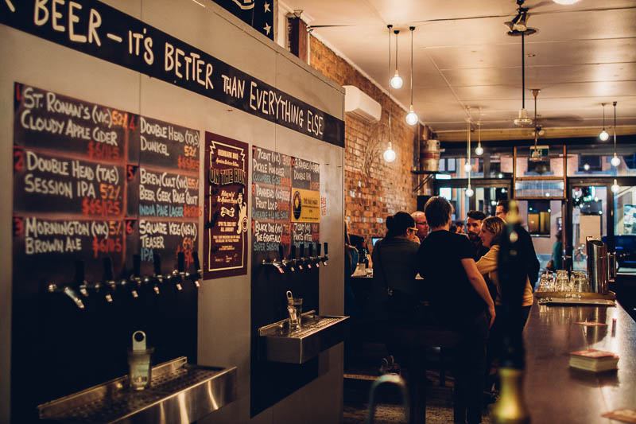

As a craft beer enthusiast, you know that beer is more than just a drink. It's an experience. Craft beer is brewed with passion, creativity, and soul, and it's something that should be savored and appreciated.
A craft beer enthusiast is someone who appreciates the artistry that goes into brewing a great beer.

If you're a craft beer enthusiast in Melbourne, you're in luck.
MELBOURNE | Melbourne has firmly established itself as the craft beer capital of Australia in recent years (although the other state capitals are catching up), however the plethora of choice of craft beer pubs in this city is both a blessing and a curse. To help those of you out there who are into craft beer, we have set out our favourite pubs in Melbourne where you can get access to a wide range of beers on tap and in bottle, as well as knowledgeable bar staff who can help you find the right beer for you if you’re not sure what you will like. Be sure to let us know in the comments if you think there are any venues we have missed!
A craft beer enthusiast is someone who appreciates the artistry that goes into brewing a great beer. They enjoy exploring the different flavors and styles of beer, and they seek out new and unique breweries to try. A craft beer enthusiast is also someone who values the community that surrounds craft beer, from the brewers to the drinkers to the local businesses that support the industry.
At Brewed With Soul, we share your love of beer and we're committed to helping you discover new and exciting brews. Whether you're a seasoned craft beer enthusiast or just starting out, we're here to guide you on your journey. Cheers!